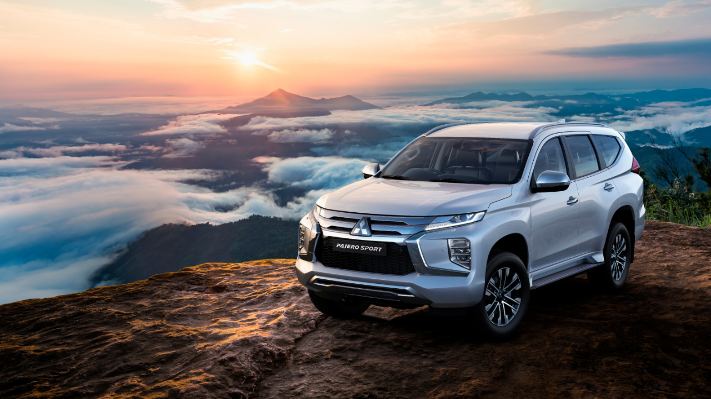
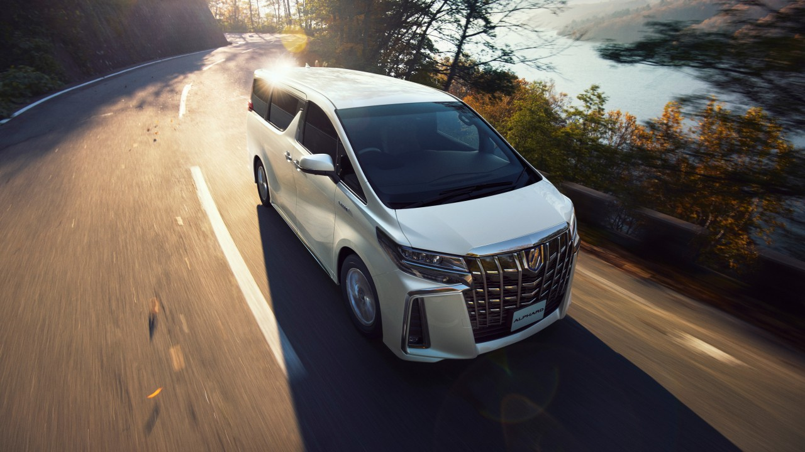

Tipe Mobil
SUV

Sport Utility VehicleSUV adalah klasifikasi mobil penumpang namun dibangun di atas kerangka truk ringan. Di Indonesia, mobil yang berjenis ini sering disebut "Jip". sebenarnya jip itu adalah merk mobil amerika SUV pertama didunia yaitu "Jeep". Liat Mobil |
MPV

Multi Purpose VehicleMPV adalah klasifikasi mobil "multi-fungsi" yang dapat digunakan sebagai pengangkut penumpang sekaligus kendaraan pembawa barang. Kendaraan bertipe ini cenderung memiliki klasifikasi "mini-bus" (bus kecil) dilihat dari bentuknya. Produksi kendaraan yang bertipe MPV ini biasanya terdapat dua varian yaitu untuk membawa penumpang (dengan kursi penumpang belakang) dan untuk membawa kargo (tanpa jendela dan kursi penumpang belakang) yang hanya dikhususkan untuk membawa barang. Liat Mobil |
Sedan
SedanSedan adalah sebuah jenis mobil penumpang dengan 3 macam konfigurasi dengan Pilar A, B, dan C. Bagian untuk penumpang terdiri dari 2 baris tempat duduk dengan kapasitas sampai dengan 5 orang. Untuk barang biasanya diletakkan di belakang, kecuali untuk beberapa mobil yang mesinnya diletakkan di belakang seperti Renault Dauphine, Tatra T613, Volkswagen Type 3 dan Chevrolet Corvair. Merupakan salah satu bentuk mobil yang paling umum. Termasuk di dalamnya kategori sedan sport. Liat Mobil |
|---|